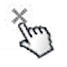

En cualquier momento, podemos dejar de compartir un archivo o documento con una, varias, o todas las personas con las que compartíamos. Sólo debemos tener en cuenta que podremos hacerlo siempre que seamos el propietario del archivo o bien que tengamos "permiso de edición" y la configuración de este permiso, por parte de su propietario, lo permita.
Si deseamos dejar de compartir un archivo o documento, debemos acceder a la ventana de "Configuración para compartir". Desde aquí "podemos ver a todas las personas con las que estamos compartiendo un archivo" así como los permisos que posee cada uno.
Una vez abierta la ventana, debemos localizar a la persona con la que deseamos dejar de compartir y hacer clic sobre el aspa que se encuentra a la derecha del nombre. Podemos pulsar sobre el aspa que corresponde a todas las personas que necesitemos dejar de compartir.
Una vez marcadas las personas, veremos un mensaje que nos pide que guardemos los cambios. Al pulsar sobre el botón "Guardar cambios", los usuarios marcados desaparecerán de forma definitiva del listado.

Si quisiéramos dejar de compartir definitivamente un archivo, debemos marcar a todos los usuarios y luego guardar los cambios. Podremos comprobar que en el listado de archivos, desaparecerá la palabra "Compartido" que se encontraba a la derecha del nombre.